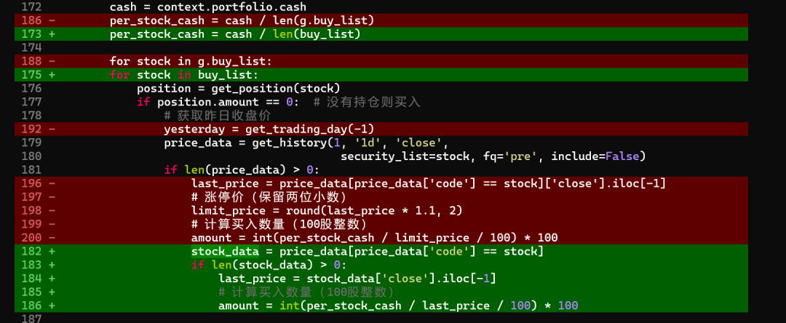
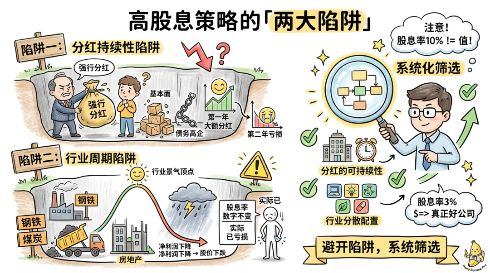
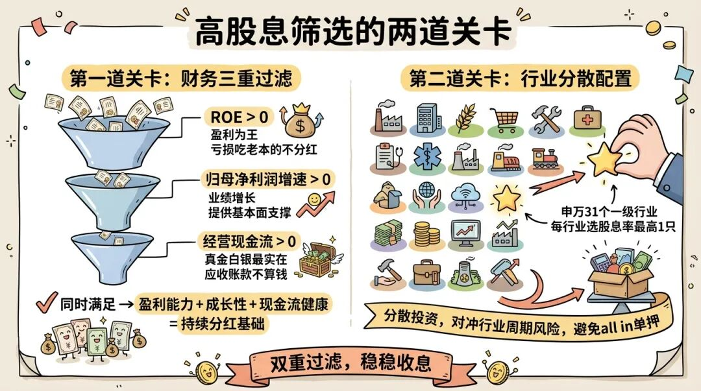
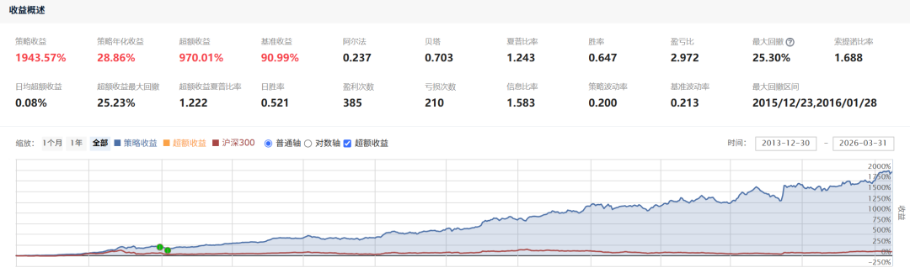
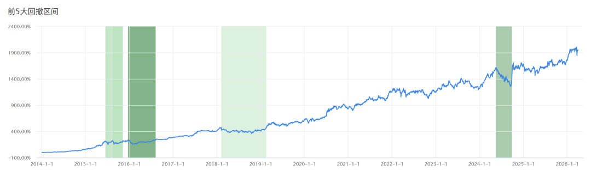
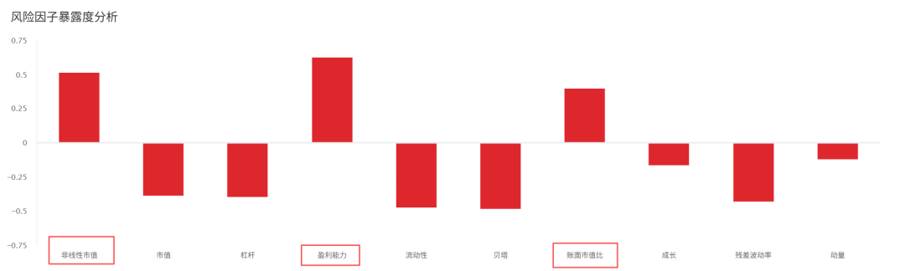

大家好，我是猫哥。前段时间一直更新AI相关内容，许久没有写量化方面的文章了，之前写过使用claude code 开发量化策略的一系列文章， 主要集中在小市值，波动较大，一般人经受不了这个回撤。
今天继续更新这个系列，介绍一个高股息类型的策略，这种策略从体感来说，更符合价值投资的理念，波动也比小市值策略小很多，作为策略池的有效补充。当然策略开发依然离不开Claude Code，不知道为啥最近又喜欢在黑乎乎的终端界面进行Coding了，依旧99%的代码都是AI生成。

首先从什么是股市讲起，股市的本质是一个为企业提供融资渠道、为投资者提供投资机会的资本市场。你买入一只股票，买的不是一张纸，而是对这家公司的部分所有权，是生产资料，可以获取公司的股息分红。
在猫哥看来，高股息类的策略，需要关注2点，一是分红的持续性，也就是所谓的"高股息陷阱"，很多公司可能看重股息率高，实际上是不可持续的，例如基本面逐渐恶化，债务高企，强行分红吸引散户；或者某一年大额分红，第二年亏损。
第二点就是行业陷阱，高股息类的股票，往往集中在特定的几个行业，而行业又是有周期性的，例如钢铁、煤炭、房地产等，行业景气高点的时期，分红丰厚、股价还撑着但行业已经到顶了，等景气度开始下降，净利润下降引起股价下跌，而股息率 = 每股分红 ÷ 股价，可能你看到股息率未变，但股价此时已经跌的惨不忍睹。
这种"股息陷阱"坑了太多人。一家公司股息率10%，不代表它值得买；另一家股息率只有3%，可能反而是真正的好公司。所以如何用一套系统化的方法进行筛选，就显得尤为重要。

二、如何规避高股息陷阱
为了尽量避免第一个问题，需要进行一些基本面相关的筛选，这里设置了三个过滤条件：
1. ROE大于0
ROE就是净资产收益率，衡量公司的赚钱能力，ROE大于零就说明公司最起码是盈利的，不是那种亏损还要吃老本分红的公司。
2.归母净利润增速大于0
说明公司的业绩在逐年增长，为分红提供扎实的基本面支撑，不是那种业务逐渐下滑的公司。
3.经营现金流大于0
这个指标最容易被忽略，很多公司虽然净利润很高，但是赚的钱不是真金白银，而是大量的应收账款作为数字游戏。而分红必然来自真金白银的现金流，否则是无源之水。
三个条件同时满足，是为了让选出的公司既有盈利能力、又有成长性、还有健康的现金流——这才具备持续分红的基础。（这里为了分红稳定性，可以选择近三年的股息率。）
针对"行业集中度"这个问题，可以采用行业分散策略：先把申万31个一级行业各自拆开，每个行业挑选股息率最高的1只股票，再从这31只中优中选优、取前10名。这样选出来的，就是高分红行业中的TOP股票，同时天然规避单一行业集中暴露的风险。

避免重仓押注单一行业，对冲行业周期风险。当然也可以做行业中性化（中性化后的股息率 = 原始股息率 - 行业平均股息率），这个后续再更新。
三、量化策略浅析
量化回测平台选择聚宽，数据丰富、社区活跃，非常适合新人们去学习，后续我也会更新一个完整的教程。

14年至今，大概20倍左右，夏普比率1.24，虽然比不上小市值的表现，但是最大回撤也比小市值低很多，整体曲线看起来也较为稳定。当然这个策略还是有很多待完善的地方，后续会进一步优化。

最大回撤发生在2016年，以及2024年中旬，当时市场处于熊市状态，策略是满仓持有，这个也无法避免。

看一下策略超配了哪些风险因子：
1.盈利能力（+0.63）：策略超配了高盈利公司，显著跑赢基准，这是策略的核心收益来源。
2.非线性市值（+0.52）：策略偏向于中盘股（区别于大盘 / 小盘的特殊特征），对中盘风格有显著暴露。
3.账面市值比（+0.40）：策略倾向低估值（高账面市值比）股票，具备典型的 “价值股” 特征。
四、总结
高股息策略本身逻辑是非常硬的，适合做量化策略的压舱石，但很多人只看到了"高股息"这三个字，忽视了背后的陷阱。猫哥的体会是，高股息是结果，而不是原因。只有现金流健康、分红可持续、净利润稳定增长，才是我们值得持有的高股息公司。
这样的公司，目前在市场可能并不多见，所以更需要我们擦亮眼睛，从多个方面佐证。随着AI的发展，我们散户可以用到的工具也是越来越多，例如很多AI都提供解读财报、深度研究等功能，值得去多尝试。
如果你在量化学习过程中遇到什么问题，欢迎在评论区交流。
策略已在聚宽社区和知识星球分享：
https://www.joinquant.com/view/community/detail/70021
猫哥精心整理了AI+量化的入门资料，如需可后台回复‘量化’获取。
想开通量化的朋友可在主页联系我，备注“量化开户”
免责声明：本内容为个人业余研究，所有股票代码和策略代码仅作示例，不构成任何投资建议。本公众号仅做知识整理，对信息的准确性及完整性不做保证，亦不用于商业用途。投资有风险，入市需谨慎。
推荐阅读：